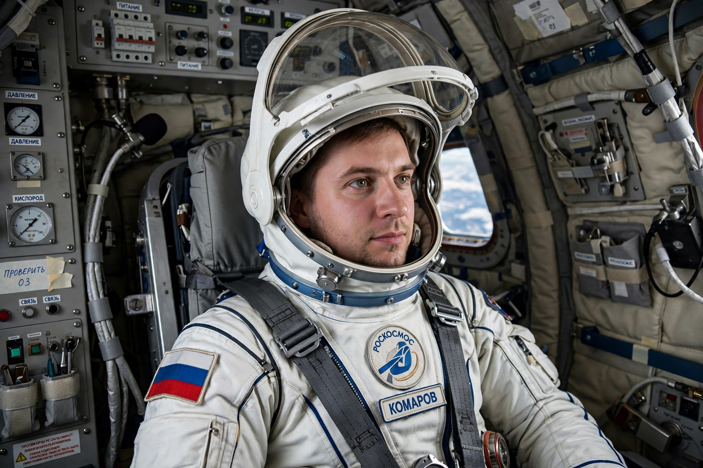

Sokol space suit
From Wikipedia, the free encyclopedia
| Sokol space suit | |
|---|---|
| Type | Launch and entry pressure suit |
| Used on | Soyuz (1973–present) |
| Manufacturer | NPP Zvezda |
| Introduced after | Soyuz 11 disaster (1971) |

The Sokol suit.The Sokol (Russian for 'falcon') is a lightweight pressure suit worn by every Soyuz crew member during launch, docking and landing — not designed for spacewalks, but to keep its wearer alive if the cabin depressurises. It exists because of a disaster: after the Soyuz 11 crew died of asphyxiation in 1971 because their capsule vented, Soviet crews returned to orbit in 1973 wearing the first Sokol-K suits, and no Soyuz has flown without them since.
The current Sokol-KV2 / Sokol-M variants are custom-fitted to each crew member, with an integral soft hood-helmet whose visor seals against a neck ring, umbilicals to the ship's oxygen, and a distinctive blue-grey rubberised fabric. Crews don them for every dynamic phase of flight; the suit's survival value was proven conceptually by its sibling designs (the US Shuttle-era ACES 'pumpkin suit' follows the same philosophy).
Fitting ritual
Each suit is moulded around its flyer, who must demonstrate the crouched 'fetal' posture needed to fit the Soyuz descent module's couches — a fitting process so body-specific that suit measurements are part of crew selection lore. Aboard the ISS, Sokol suits are stored for the ride home: every resident's ticket down is the suit (and custom seat liner) they came up in.